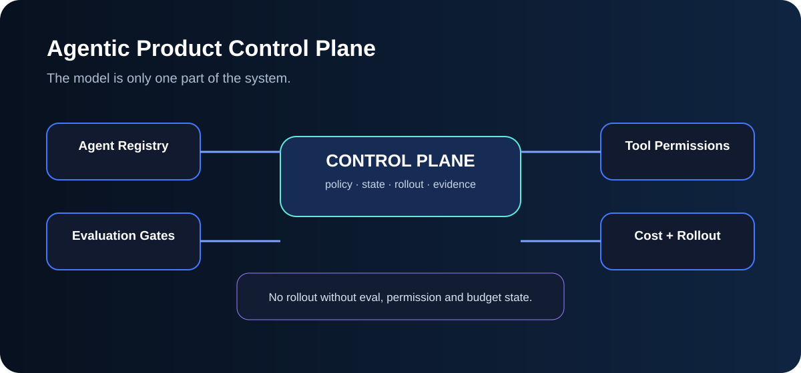
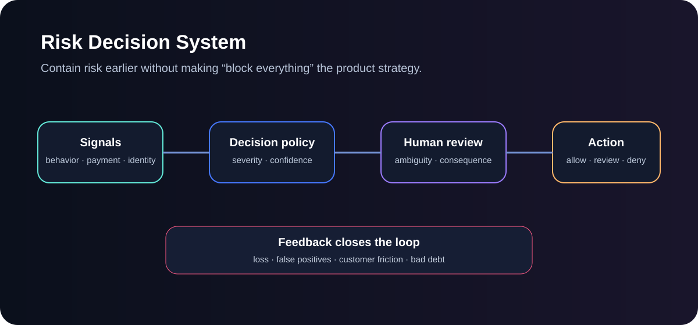

CONTROL
Agent Control Plane
Tool permissions, approval gates, eval thresholds, cost limits and rollout state around an agent.
Open code →Runnable prototypes across agent control, evaluation, risk, fintech, reliability and product discovery. Open a system to see the mechanism, code and tradeoffs.

Tool permissions, approval gates, eval thresholds, cost limits and rollout state around an agent.
Open code →
Model quality, adoption, workflow success, trust, availability and measurable impact in one release decision.
Open system →
Risk signals, policy thresholds, human review and action with customer harm kept visible.
Open system →